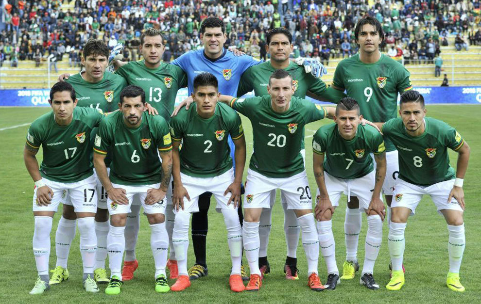

BOLIVIA
La selección de fútbol de Bolivia, conocida como la Verde, es el equipo representativo de Bolivia en las competiciones oficiales de fútbol. Su organización está a cargo de la Federación Boliviana de Fútbol, cuya fundación data del 12 de septiembre de 19252 (hace 98 años). Está afiliada a la FIFA desde 192623 y es uno de los miembros de la Conmebol desde 1926. Jugó su primer partido el 12 de octubre de 1926 en Santiago, Chile, correspondiente al Campeonato Sudamericano de 1926.
